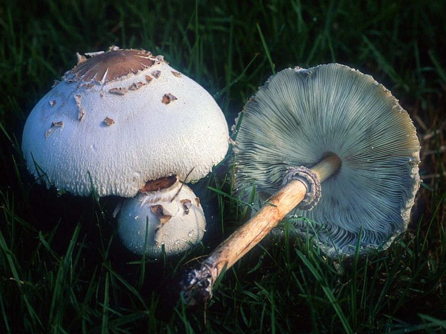

फ़ॉल्स पैरासोलFalse Parasol
Chlorophyllum molybdites · Agaricaceae · FNG-0029

- Scientific nameवैज्ञानिक नाम
- Chlorophyllum molybdites (G. Meyer) Massa
- Familyकुल
- Agaricaceae
- Hindiहिंदी
- फ़ॉल्स पैरासोल
- Local namesस्थानीय नाम
- false parasol, green spored parasol, fals parasol, chhatri
- Status hereयहाँ की स्थिति
- native
- Movementआवागमन
- Resident, here all year
- IUCNIUCN
- not evaluated
- Reviewसमीक्षा
- audited and independently read
When to look कब देखें
Expected mainly in June, July, August, September, October, November.मुख्यतः जून, जुलाई, अगस्त, सितंबर, अक्टूबर, नवंबर में अपेक्षित।
Uses and possibilities उपयोग और संभावनाएँ
Drawn from the documented uses in the profile below, where each is labelled traditional, current or a research lead. All uses →
Tell it apart from इनसे अलग पहचानें
फ़ॉल्स पैरासोल / False Parasol
Chlorophyllum molybdites (G. Meyer) Massa — Agaricaceae
फ़ॉल्स पैरासोल — जहरीला मशरूम। इस मशरूम को खाने से पेट दर्द, उल्टी, दस्त हो जाते हैं। बरसात के बाद घास के मैदान और बाग़ों में उगता है। परासोल मशरूम (खाने योग्य) से बिल्कुल मिलता-जुलता है, पर हरे रंग की गिल्स इसे अलग करती हैं। कभी-कभी लोग गलती से खा लेते हैं। बस्ती जिले के बाग़ों में इसे देखा गया है। पहचान सीख लेना ज़रूरी है।
Quick Identification त्वरित पहचान
| Feature | Description | |
|---|---|---|
| Cap | White to pale grey; 5–15 cm; scaly surface (dark brown scales on pale background); resembles [[parasol_mushroom\ | parasol mushroom]] |
| Gills | Green or greenish-grey (distinctive); free from stalk (not running down); this is the diagnostic feature | |
| Stalk | White, hollow, with a movable ring (skirt-like); may have a bulbous base with a cup-like structure (volva) | |
| Spore print | Green (not white or brown) | |
| Size | Large; 10–20 cm total height | |
| Smell | Pleasant, mushroom-like aroma; no distinctive odour | |
| Habitat | Lawns, grassy fields, disturbed areas; never on wood |
Field tip: False Parasol looks like a parasol mushroom but has green gills instead of white. The green spore print is diagnostic. Any large white or pale mushroom with green gills in a grassy area should NOT be eaten — it is False Parasol. The false parasol is one of the most commonly mistaken poisonous mushrooms. Never consume any wild mushroom without expert identification.
हिंदी — कैसे पहचानें: सफेद, बड़ा, परासोल जैसा। पर गिल्स हरी होती हैं। यह जहरीला है। छुयें तो नुकसान नहीं, खाएँ तो बीमारी हो जाएगी।
Morphology आकारिकी
| Feature | Measurement |
|---|---|
| Cap (pileus) diameter | 5–15 cm |
| Stipe height | 8–15 cm |
| Stipe diameter | 10–15 mm |
| Ring position | Upper stalk; movable |
| Spore dimensions | 10–12 × 7–9 µm |
Cap (Pileus): Convex, becoming flattened with age; 5–15 cm across; distinctive scaly pattern — white or pale ground colour with darker brown or grey scales; the scales are the remains of the universal veil (outer covering).
Gills: Free from stalk (not running down); closely crowded; white when young, becoming greenish or olive-green as spores develop. The green colour is distinctive and diagnostic. Gill edges are smooth or slightly irregular.
Stalk (Stipe): White, hollow, smooth or with fine fibrils; 8–15 cm tall; approximately 10–15 mm diameter. A movable ring (annulus) is present in the upper half of the stalk; the ring is not attached to the stalk and can slide freely up and down. The base may have a bulbous expansion with a cup-like structure (volva) — remnant of the universal veil.
Spore print: Green — this is the definitive identification feature. Any large white mushroom with a green spore print is a Chlorophyllum species and should be presumed toxic.
Flesh: White; does not change colour when cut; firm, compact.
Texture: Cap surface scaly; stalk smooth.
Agricultural / Human Relevance कृषि प्रासंगिकता
POISONING HAZARD — PRIMARY CONCERN:
Chlorophyllum molybdites causes gastrointestinal illness in humans. It is one of the most frequently reported mushroom poisonings in tropical regions, particularly in areas where people forage wild mushrooms.
Toxin: The active toxin is not completely identified; compounds in the mushroom irritate the gastric and intestinal mucosa.
Symptoms (onset 30 minutes to 3 hours after ingestion):
- Abdominal cramping and pain
- Nausea and vomiting
- Diarrhoea (sometimes severe)
- General malaise
Prognosis: Poisoning is typically not fatal but causes severe discomfort. Recovery occurs within 24–48 hours. No antidote; treatment is supportive (fluids, electrolyte replacement).
At-risk populations:
- Foragers who mistake the species for edible parasol mushroom (Macrolepiota procera, which has white gills)
- Children who might taste unidentified mushrooms
- Recent migrants to eastern UP unfamiliar with local fungal diversity
First aid if ingestion is suspected:
- Induce vomiting only if recommended by poison control centre; in some cases, activated charcoal may be given
- Seek medical attention immediately; bring a sample of the mushroom for identification
- Do not wait for symptoms to worsen; early treatment is important
- Contact poison control centre (India's poison control: AIZAT 1800-180-1104 for some states; local hospitals for others)
Prevention:
- Education: Teach children never to taste any unidentified mushroom
- Expert verification: Never consume wild mushrooms without 100% certain identification by an expert mycologist
- Local knowledge: In areas where parasol mushroom is consumed locally, train foragers to distinguish it from false parasol by spore print testing (white vs. green)
हिंदी: इस मशरूम को खाने से भारी उल्टी-दस्त होते हैं। परासोल मशरूम जैसा दिखता है पर गिल्स हरी होती हैं। कभी गलती से भी न खाएँ। अगर खा लिया तो डॉक्टर के पास दौड़ो।
Expected Locally स्थानीय रूप से अपेक्षित
Not a field record. Written from published accounts for eastern Uttar Pradesh. No confirmed local sighting yet — if you have seen it, that is what the atlas needs.
अभी तक स्थानीय पुष्टि नहीं। यह विवरण प्रकाशित स्रोतों से है, किसी अवलोकन से नहीं।
False Parasol is to be expected in Basti and Ayodhya districts on grassy lawns, garden edges, and disturbed soil, particularly during the monsoon and early post-monsoon months (July–October). The mushroom should be visible on lawns after rain and should be identifiable by its white cap with brown scales, green gills, and movable ring on the stalk. A first confirmed local record would be a photograph showing the green gills and green spore print (made by placing the cap on white paper overnight), with place and date documented.
Distribution वितरण
Global range: Tropical and subtropical regions worldwide; widespread in warm climates with seasonal rainfall.
In India: Found throughout India; particularly common in monsoon-influenced areas with wet grassy habitats.
In Uttar Pradesh: Reported from multiple districts; eastern UP likely has populations based on habitat availability and climate.
In Basti district / eastern UP: Expected in lawns, gardens, and disturbed grassy areas during monsoon and post-monsoon months.
Research Questions शोध प्रश्न
- How frequently does Chlorophyllum molybdites appear in Basti district gardens and lawns in a typical monsoon season? — Weekly surveys of 5–10 sites from July to October.
- Are there documented cases of accidental poisoning by false parasol in Basti or adjacent districts in the past 5 years? — Hospital and poison control records; community interviews.
- Can local residents distinguish false parasol from edible parasol mushroom based on simple field tests (spore print, gill colour)? — Community training; pre- and post-training quiz.
- What is the chemical composition of toxins in locally collected Chlorophyllum molybdites, and does it vary seasonally? — Chemical analysis of specimens.
- Is false parasol present in untended village commons and waste ground, where children might encounter and consume it? — Habitat survey; risk assessment.
Similar Species मिलती-जुलती प्रजातियाँ
| Species | How to tell apart | हिंदी | TOXICITY | |
|---|---|---|---|---|
| Parasol Mushroom (Macrolepiota procera) | Large, white, scaly cap; but GILLS ARE WHITE (not green); edible | परासोल, गिल्स सफेद | EDIBLE | |
| Shaggy Parasol (Chlorophyllum brunneum) | Similar to false parasol but gills white or pale grey (not green); cap more heavily scaled | भूरे के साथ स्केली | POTENTIALLY TOXIC | |
| **[[oyster_mushroom\ | Oyster Mushroom]]** (Pleurotus spp.) | Fan-shaped cap; decurrent gills (running down stalk); off-centre stalk | ढींगरी, पंखा जैसा | EDIBLE |
Field rule: Any large white or pale mushroom with green gills is a Chlorophyllum species and should be presumed toxic. To confirm: make a spore print on white paper; if the print is green, do not eat. Parasol mushroom has white gills and white spore print.
Taxonomy & Classification वर्गीकरण
Original description. Chlorophyllum molybdites was originally described by Georg Heinrich Meyer as Agaricus molybdites in 1836. It was transferred to the genus Chlorophyllum by Pierre Bourquin and Philippe Boursier in 1977 to reflect its distinctive green-spored character. The species epithet molybdites refers to molybdenum (a heavy metal), possibly alluding to the greenish colour.
Subspecies. Monotypic — no subspecies are currently recognised.
Family and order placement. Order Agaricales, family Agaricaceae. The Agaricaceae includes button mushroom (Agaricus bisporus) and parasol mushroom (Macrolepiota).
Phylogenetic notes. Molecular phylogenetics confirms Chlorophyllum molybdites as distinct from Macrolepiota despite morphological similarity. The green spore colour appears to be a synapomorphy (shared derived character) within Chlorophyllum.
IUCN status rationale. Not evaluated. The species is widespread and abundant; conservation concerns do not apply.
Photo Gallery फोटो गैलरी
Photos needed आवश्यक फोटो
- [ ] Fruiting mushroom in grass (घास में)
- [ ] Cap showing brown scales on white (छत्र)
- [ ] Gills showing green colour (हरी गिल्स) — CRITICAL FOR IDENTIFICATION
- [ ] Green spore print (हरी बीज-पत्ती) — DIAGNOSTIC
- [ ] Comparison with parasol mushroom (तुलना)
No photos yet — add field photos to media/species/false_parasol/ and run node scripts/sync_photos.js.
References संदर्भ
- Meyer, G.H. (1836). Primitiae Florae Essequeboensis. Göttingen. [original description context]
- Lincoff, G. (1981). The Audubon Society Field Guide to North American Mushrooms. Knopf, New York. [North American distribution and toxicology]
- Beug, M.W. et al. (2006). Mycomedicines: medicinal properties of fungi. In: Mushroom Toxins. CRC Press, Boca Raton. [toxin and poisoning information]
- Tulloss, R.E. & Lindgren, J.E. (1992). Amatoxin and phallotoxin levels in Amanita species, with notes on poisoning cases. Mycotaxon 42: 359–387. [toxicological reference]
- Kalyani, K.R. et al. (2010). Mushroom poisoning cases in tropical India. Indian Journal of Medical Research 131: 562–568.
- GBIF Occurrence Data — Chlorophyllum molybdites, India (2026).
Source file: species/fungi/mushrooms/false_parasol.md